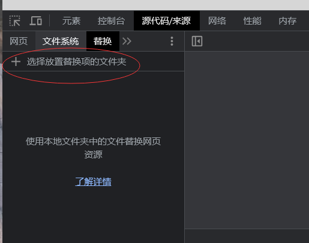
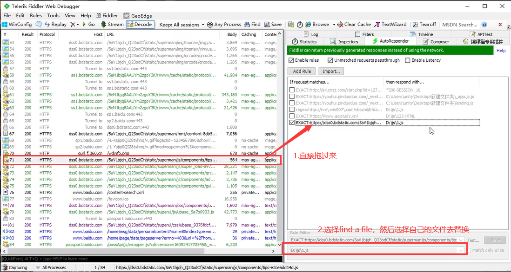

逆向 js
- 调试
搜索相关字段或者加密固定的标识符
XHR调试
-
扣取js
-
改写js
-
本地运行出值
加密方式
取盐效验，不可逆：
-
MD5、MD2、MD4、hmac（带密码的MD5）
-
长度一般为16位、32位
-
123456的MD5：
49ba59abbe56e057
e10adc3949ba59abbe56e057f20f883e
-
MD5关键词：123456789
-
sha1、sha256、sha512
-
40位、64位、128位
-
123456的sha
7c4a8d09ca3762af61e59520943dc26494f8941b
对称加密：
- AES
- DES
- 3DES
非对称加密：
RSA（公钥、私钥），同一个明文可以生成不同的密文
插桩，全局导出变量

反调试基础
-
检测是否在调试
-
键盘监听（F12）
- 检测浏览器内外的高度差值
- 检测开发者人员的工具变量是否为 true
- 利用console
- 利用代码时间差，时间差太大说明被调试（插装）
- 利用toString方法，在使用开发者工具时，显示的变量的实际值都是用了toString方法，来展示的
- 检测栈的层数 caller
-
检测是否为非浏览器环境
-
显性检测
-
deggbuer语句
-
非虚拟机检测
-
可以把debugger语句右键设置为false
-
直接替换代码

-
可以使用直接编辑文件替换，或者浏览器插件替换，或者油猴插件
-
代理替换（Fiddler），浏览器设置代理为Fiddler

-
-
虚拟机方式检测（eval Function）函数
-
可以通过hook方式去反调
-
一般的debugger有以下方式：死循环
while (true)、 while (1) 、while (!false)、for循环for(;;)、无限递归、两个方法互相调用、计时器（）
-
-
隐性（暗装）
判断是否在调试，如果在调试就把你引向错误 的逻辑
AST
babel
官网： https://www.babeljs.cn/docs/
文档：https://github.com/jamiebuilds/babel-handbook/blob/master/translations/zh-Hans/README.md
安装
example
RPC通信
通过在浏览器中创建websocket对象，使用websocket通信调用加密函数
在调用加密函数地方的上面插入下面的代码即可
优点：不用扣 js、补环境，适用于复杂的js逆向代码或者混淆代码
缺点：需要一个win电脑，开一个浏览器环境和websocket进程